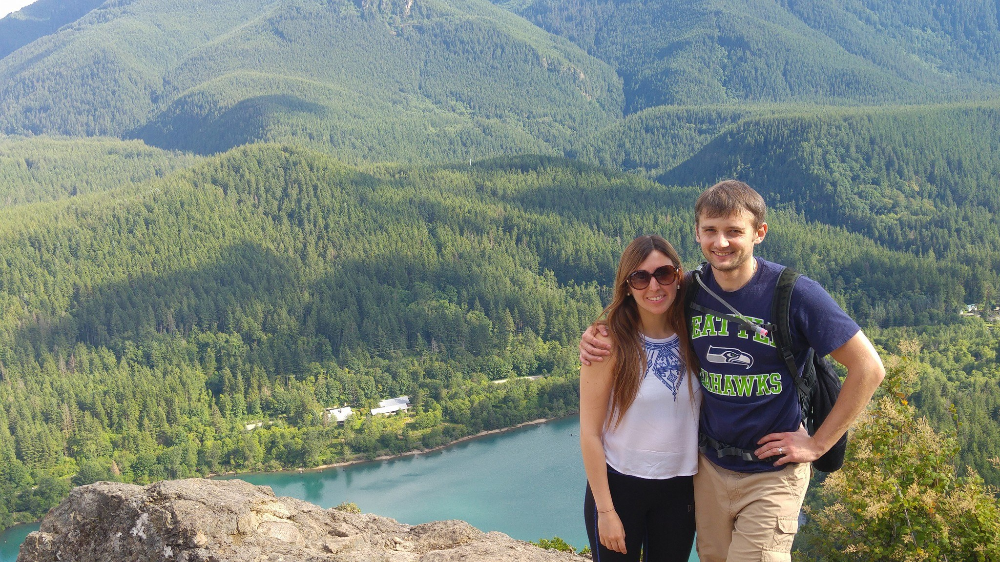
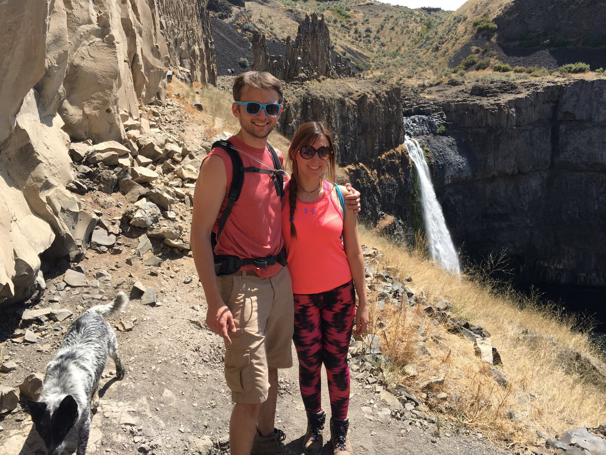
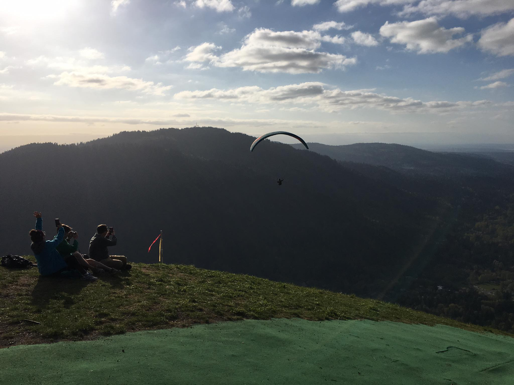
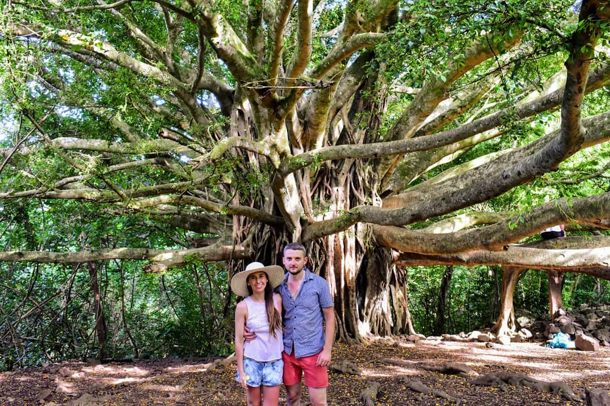

Hiking at Rattlesnake Ledge
This is a very easy hike nearby our house. It is 4 miles roundtrip and with moderate intensity. This is a busy trail because is close from Seattle and very pretty! At the top of the mountain you can see the lake. Last year, a boy died as he fell from the top, so you need to be careful when you take pictures. These are some of the pictures of that day. I went with my hubby (as usual) and we had a lot of fun!

Hiking at Palousse Falls!
Palousse falls is located in Eastern WA. It takes approximately 5 hours to get there from Seattle, so you need to consider to stay nearby. We stayed in the camping of the waterfall. It is first come,first serve, so is recommended to arrive early to make sure you get a spot. That day, we didn't really arrived early (we arrived at around 12 pm), and we found several available spots. Not sure if we were lucky or is always like that. The place is just gorgeous, you have the waterfall, there is a river were we swam and had a lot of fun and at night, since the sky is very clear in that area, you can take cool pictures.

Hiking at Poo poo point
Poo poo point is a moderately easy hike. It is 30 minutes from Seattle, nearby Issaquah. The trail is approximately 4 miles roundtrip and it gets very busy. It took us around 1 hour to get to the top of the mountain. We went in spring, so it wasn't very hot. The coolest thing we experienced was to see paragliders jumping from the top. From the condo, we used to see them fkying in the sky,so it was very cool to see them close. I even recorded a video. The interesting thing is that to be able to jump, they need to go all the way up hiking with their equipment as there is no road for the cars.

Pipiwai Trail at Maui (Hawai)
We went for 1 week vacations to Hawaii and since we are not beach people, we check all hikes accessible by car. Pipiwai trail was one of them and we are so happy we did it as it was amazing. The road to get to the beginning of the trail was a nightmare. Only one lane for both directions, next to the cliff, lots of bumps, and very sharp curves. It was only 70 miles, but it took us 3 hours to get there. However, it was worth it. The hike is 4 miles round trip. That day, wasn't very sunny which was nice as it was very hot (75 Fahrenheit). We took 2 water bottles and it was fine. The trail goes through a bamboo forest, then you see a banyan tree which semmed to us like Avatar's tree and finishes with a 400 feet long waterfall. It was incredible.
